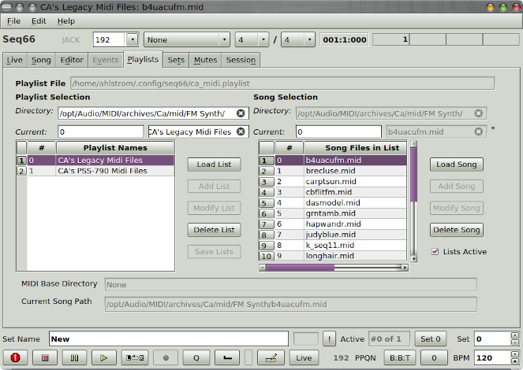

-
Playlist file.
A playlist file has the extension
.playlist and
is specified and activated in the .rc file.
Each playlist file can hold multiple playlists, with each
playlist specifying multiple songs.
-
Options.
The playlist file includes options to unmute the next song
when moving to it, and
to do a deep verification of the playlist (by attempting to
load all playlists and all songs.
These options are not yet editable in Preferences.
-
Playlist features.
Each playlist has a number, name, and
an optional base directory that specifies where
all the songs are stored for that playlist.
The playlist number both orders the playlists
and serves as a data value for the direct
selection of a particular playlist via a MIDI controller.
Each playlist contains a list of songs for that playlist.
-
Playlist songs.
Each song has a number and a name.
As with the playlist, the number orders the
songs and serves as a value to use for selection via
a MIDI controller.
-
Playlist manager.
While it is very easy to edit the
.playlist
file in a text editor, the Playlists tab can
also be used. It is fairly complex, so see the user's
manual.
|
-
Tricky.
The playlist tab is a bit tricky to use, and
probably needs some more testing.
Report bugs!
|
|

|
| Playlist Tab |
|